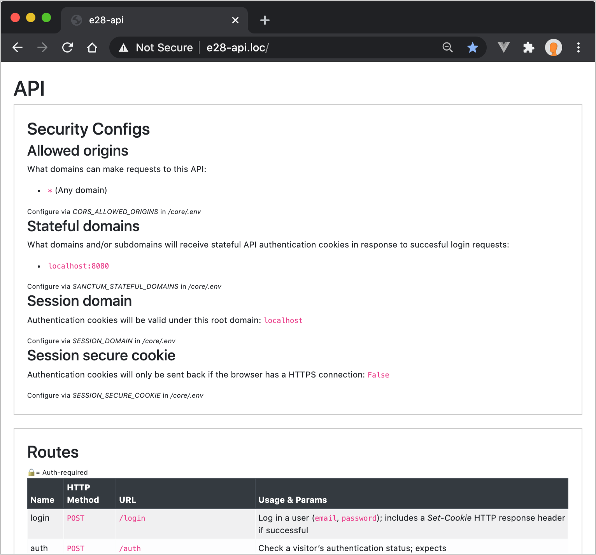
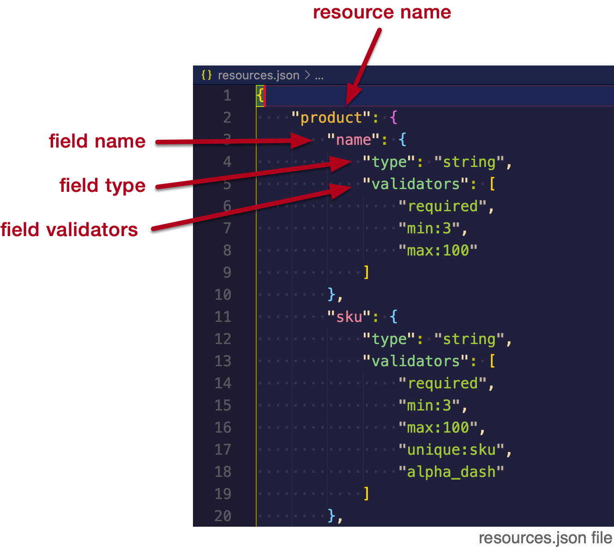

e28-api
Building a server-side API is a topic unto itself - in fact, I have an entire course devoted to server-side development: e15 Web Server Frameworks with Laravel/PHP.
Because we don’t have time to do a deep dive on server-side development, I have put together a pre-built/self-generating API system (called e28-api) for us to practice with and use within your projects.
Example:
- Dashboard: http://e28-api.hesweb.dev
- Index of products: https://e28-api.hesweb.dev/product
- Show an individual product: https://e28-api.hesweb.dev/product/1
Some key points about this system:
- Built with Laravel and PHP (but does not require any knowledge of PHP)
- Designed to be used on our DigitalOcean servers, but adaptable to other Apache servers if they have PHP installed
- Uses a SQLite database
- Includes a user authentication system powered by Laravel Sanctum
- Provides CRUD (Create, Read, Update, Delete) functionality for resources
- Follows a REST (Representational state transfer) pattern
- Supports data seeding of resources
- Intended for practice/demo purposes only
In this note set, we will cover setting up the API on both your local and production server.
- The local version will be the API your local Vue apps will communicate with. It will also be where you configure resources and seeds (discussed below).
- The production version will be the API your production Vue apps will communicate with.
Setup - Local
To set up locally, run the following commands to clone the API within your htdocs/e28 directory and remove its git history:
$ cd /path/to/htdocs/e28
$ git clone git@github.com:susanBuck/e28-api.git
$ rm -rf e28-api/.git
The first step to using this API is to run a script that will do the initial set up of the API using some pre-defined configurations. You can run this script by invoking the following command within htdocs/e28/e28-api:
$ bash setup
Assuming all goes well, you should see output similar to the following:
===> Detecting system
* Setup script version: 1.0.2
* Server: local
* PHP executable: /Applications/XAMPP/xamppfiles/bin/php
* API directory: /Applications/XAMPP/xamppfiles/htdocs/e28/temp/e28-api/
* Core directory: /Applications/XAMPP/xamppfiles/htdocs/e28/temp/e28-api/core/
* Public directory: /Applications/XAMPP/xamppfiles/htdocs/e28/temp/e28-api/core/public/
===> Updating e28-api-core
Cloning into '.'...
remote: Enumerating objects: 9155, done.
remote: Counting objects: 100% (9155/9155), done.
remote: Compressing objects: 100% (6019/6019), done.
remote: Total 9155 (delta 3030), reused 8982 (delta 2857), pack-reused 0
Receiving objects: 100% (9155/9155), 10.11 MiB | 5.04 MiB/s, done.
Resolving deltas: 100% (3030/3030), done.
Checking connectivity... done.
===> Setting up database
Created /core/database/database.sqlite
===> Laravel initial setup
Local: Setting write permissions on directories that Apache needs write access to
Creating environment file (.env)
Generating app key
Application key set successfully.
===> Expected Virtual Host:
<VirtualHost *:80>
ServerName e28-api.loc
DocumentRoot /Applications/XAMPP/xamppfiles/htdocs/e28/temp/e28-api/core/public/
<Directory /Applications/XAMPP/xamppfiles/htdocs/e28/temp/e28-api/core/public/>
AllowOverride All
Options -Indexes
Require all granted
</Directory>
</VirtualHost>
===> Build API
Resources created:
* product
* favorite
Seeds run:
* product (10 rows added)
* favorite (2 rows added)
* user (2 rows added)
To access the API set up a local domain,
http://e28-api.loc, that has a document root pointing to
/path/to/htdocs/e28-api/core/public (the setup script you just ran includes a
pre-filled
Virtual Host block you can use for this).
With this set up, when you visit http://e28-api.loc you should see the API dashboard.
API Dashboard
The API dashboard provides a way for you, the developer, to see the following information:
- Security Configs (details about these configs will be covered in Week 14 when we go over authentication)
- Routes
- Database content
Because this API is designed for demonstration purposes, the API dashboard is publicly viewable. In a real-world application, this information should be restricted.
Resources
Within the API, a resource represents a specific entity of your application. The API comes set up with 2 example resources, relevant to ZipFoods:
-
product -
favorite
To configure resources for your API, you’ll update the resources JSON object at
/resources.json.
Each property of this JSON object is a single resource, and each resource has a series of fields with a type and an array of validators.
See the section Field validation below for details on available types and validators.
See the section Naming conventions below for details on naming conventions for resource and field names.
Defaults
By default, the API is pre-configured with a user resource used for the
authentication
system; this resource can not be customized.
By default, every resource will include the following pre-configured fields which you can not/should not define:
-
id -
created_at -
updated_at
These fields are automatically populated when creating/editing resources.
Naming conventions
- Field names should be written in lower_snake_case style (e.g.
sku,name,postal_code, etc.) - Resources names should be singular and lowercase.
- Resource names can only contain letters - no numbers or special characters.
- Single-word resource names are preferable; multi-word resource names should be written in
lowerCamelCasestyle.
✅ Valid resource name examples:
-
product -
favorite -
blogPost(postwould be preferable)
❌ Invalid resource name examples:
-
products -
Favorite -
BlogPost -
blog-post
Field validation
Any data passed to the API for a given field that does not match the given type or meet the validator requirements will be rejected with an error.
Available types:
-
string(supports up to 255 characters) -
text(used for longer form text content that would exceed the limits ofstring) -
integer -
float -
boolean -
timestamp
Available validators:
-
requiredThe field under validation must be present in the input data and not empty. -
min:5The field under validation must be less than or equal to a minimum value (example given here is5). -
max:10The field under validation must be less than or equal to a maximum value (example given here is10). -
alphaThe field under validation must be entirely alphabetic characters. -
alpha_numThe field under validation must be entirely alpha-numeric characters. -
alpha_dashThe field under validation may have alpha-numeric characters, as well as dashes and underscores. -
numericThe field under validation must be numeric. -
emailThe field under validation must be formatted as an e-mail address. -
booleanThe field under validation must be able to be cast as a boolean. -
uniqueThe value for the field under validation must be unique (e.g. the product resource has a field sku with the unique validator so you can not have more than one product with the same sku).
Note: type/validators are required
Every field must have a type.
If a field does not need any validation, set validators to an empty array [].
e.g.:
"product": {
"name": {
"type": "string",
"validators": []
},
Seeds
To seed your database with example data, create seed configuration files in /seeds.
See the
provided favorite.json, product.json, and user.json seeder files
for example.
Each seed file should be named according to the resource it seeds. For example, for the
product resource there’s an example /seeds/product.json file.
The JSON object in the seed files should have a single key, seeds, set to an array of
data
objects for each individual row of data to be added.
Auth-required resources
Any resource with a field called user_id will require authentication; the provided
favorite resource is an example of an auth-required resource.
The authenticating user will only have access to rows where their id matches the
user_id of the given row. This means...
- the index and query routes will only return rows belonging to the authenticating user.
- the show, store, update, and delete routes will only work if the impacted row belongs to the authenticating user.
Rebuilding
Whenever you make edits to resources or seeds, you need to rebuild the API by running the setup script again:
$ bash setup
Note that rebuilding the API will always clear out any data that your application has generated. This is expected/okay as we are only using this API for practice purposes, and not in a real-world application.
Setup - Production
If you are using a server other than DigitalOcean, you will need to edit the value set for
productionApacheUser at the top of the ./setup script.
Synchronize your e28 repository so that the e28-api application is available on production at
/var/www/html/e28/e28-api. This will make it so all of the resources and seeds you
configured
locally will be available on production.
Run the setup script on production:
$ cd /var/www/html/e28/e28-api
$ bash setup
The first time you run the setup script on DigitalOcean, it will install some additional software your server will need to run the API. Follow the instructions on screen whenever prompted to continue with the installation.
Once setup is complete, configure a production domain, http://e28-api.yourdomain.com, so that
its document root is /var/www/html/e28-api/core/public.
Example Virtual Host:
<VirtualHost *:80>
ServerName e28-api.yourdomain.com
DocumentRoot /var/www/html/e28/e28-api/core/public/
<Directory /var/www/html/e28/e28-api/core/public/>
AllowOverride All
Options -Indexes
Require all granted
</Directory>
</VirtualHost>
The production version of your API should now be available at http://e28-api.yourdomain.com and this should be the URL your application sends Ajax requests to when running on production.
See Axios config on production - environment variables to learn how to configure your application to use a different API url depending on the mode in which the application is running.
Behind the scenes
The following information explains how the underlying e28-api system works. This is presented here as “FYI” for those that are curious. Studying the inner workings of the API is not required.
The repo you clone, susanBuck/e28-api, is not actually the “core” of the API - it’s just a skeleton that contains the resource and seed configuration files as well as the setup script.
When the setup script is invoked, it clones (or updates) susanBuck/e28-api-core which is the actual API system built with Laravel.
This API system abstracts all of the coding work necessary to build an API. You can think of it as “self-generating” - it uses the resource configuration files you write to generate the following code files:
- Controllers and routes to manage incoming requests
- Models to communicate with the database
- Validation requests to validate incoming data
If you want to “pop the hood” to see the inner workings of the API, explore the following directories/files:
-
/core/app/Http/Controllers/GeneratedControllers/ -
/core/app/Models/GeneratedModels/ -
/core/app/Http/Requests/GeneratedRequests/ -
/core/routes/generated-routes.php
Note though, that you should not directly edit any of the files found here, as they will only be overwritten the next time you run setup.